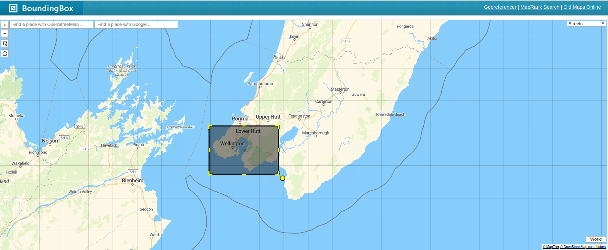
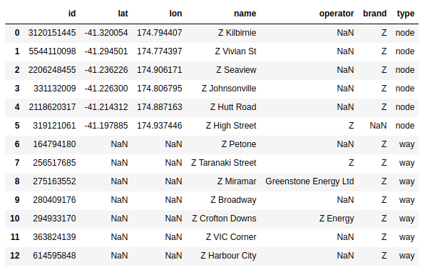

Geospatial proximity analysis with fuel stations - data
Part 1: using OpenStreetMap to get data
Journeys begin with a question. A chance discovery of an excellent introduction and tutorial on urban modelling by Sir Alan Wilson led me to think about a more general proposition:
> How can we measure value derived from spatial placement of amenities?
The question of value from amenities is an important one for both the private and public sectors. The public sector might care about value derived from amending a bus route or, adding a new bridge / flyover. The private sector might care about value derived from a new supermarket - with questions around potential cannibalism of sales from nearby branches of the same brand to managing competition in the vicinity. The possibilities are extensive! But to keep this exploration tractable, I’ll just be comparing two brands of fuel stations that are well represented in Wellington, New Zealand: Z and BP.
This series is an exploration of simple methods to identify and compare value derived from spatial placement. I’ll be using some well-known spatial techniques (e.g. accessibility analysis) and some lesser used ones (network analysis to discern structure).
Towards a business question
We can approximate value as usefulness. For fuel station networks, usefulness can be broken down into some high level aspects:
Fuel station locations – Coverage
Interactions of fuel stations with the environment – With Humans: accessibility, convenience – With Other entities (e.g. amenities like cafes, cinema theatres etc.): locale
Fuel station characteristics – Available amenities (e.g. toilets, fuel types, food etc.) - supply – Uptake of availabile amenities (i.e. higher scores for amenities that are used more) - where supply meets
To make concrete comparisons between competing fuel station brands, we need to break down the high level aspects into proxy metrics, or quantitative analyses.
- Coverage – Structure of fuel station inter-connectivity – Average spatial separation between two fuel stations – Nearest neighbours: same brand or competitor?
- Interactions with the ‘human’ environment – Driving accessibility
All these analyses drive a natural business question that can be tracked throughout the series: > Does Z have better coverage than their competitor(s) in Wellington? If so/not, how?
The two part business question is a useful format. It forces the Data Scientist / Analyst to examine all the results and develop a sensible high level answer, and providing the requisite details that the answer derives from.
The Fuel Stations series at a glance
The above analyses are split into 3 posts since the entirity is almost unreadable:
Resources
I’ve used studies from urban data science as inspiration. Some resources I’ve consulted include: - Talk on Urban Data Science by Dr. Cecilia Mascolo - Understanding Traffic with Open Data by researchers at Oxford Internet Institute - Geoff Boening’s blog - especially his package OSMnx - Proximity and accessibility analyses with Pandana
All the code and formalised report of the analysis can be found in a github repo. The text is almost identical to the blog posts.
Introduction to Spatial data
Spatial data includes geographical information for physical entities in our world. Since we’re focusing on man-made entities like fuel stations, the simplest geographical information we require is geolocation. This information can be enriched with attributes that describe local geography - derived from the surrounding environment.
What spatial data do we need?
We need the following data to calculate the coverage metrics and do the quantitative analyses. There are two key types of data: Base and Points of Interest (POIS). The tools used to get and process the data are described in more detail in the following section.
| Data | Type | Why? | How? |
|---|---|---|---|
| Geo-tagged fuel stations | POIS | The key spatial entities we’re interested in | OpenStreetMap via Overpass |
| Regional map and street network | Base | To connect the fuel stations via real world streets and roads | OpenStreetMap via OSMnx |
| Street network broken up into regular points | Base | For simpler interactions between geography and fuel stations | OpenStreetMap via Panadana |
OpenStreetMap (OSM) is the underlying data source. OSM is an open, collaborative map of the world. Map data can be queried and downloaded locally using the Overpass API. In a later section, I will show how I leveraged the collaborative feature to update / add information on Wellington fuel stations. Editing OSM will continue to be an important aspect of any future version of this project, e.g. the available services at the various fuel stations.
The main advantage of using OSM, other than the altruistic aspect of enriching the available information for others, is that the same framework provides data for all fuel station brands. Comparative analyses become much easier since they don’t require data munging from different sources.
Summary of spatial analyses
As indicated in the previous section, there are two main data types: Base and POIS. At a simplistic level, the analyses outlined in this report are essentially different types of interactions between the base data and POIS. I’ve focused on pairwise interactions involving: - POIS - POIS interactions via the base layer – Distances between fuel stations - Base grid - POIS interactions – Distances between surrounding street geography (reduced to points) and fuel stations
While these interactions seem trivial, they can generate considerable insight into coverage.
- POIS - POIS interactions via the base layer
- Connectivity structure of the fuel station network
- Base grid - POIS interactions
- Accessibility to fuel stations
Tools
This series is generated with Python 2.7 running in a Jupyter Notebook. All the Python packages highlighted in this section can be easily installed using a package manager like conda or pip.
| Tool | Type | What does it do? |
|---|---|---|
| Jupyter Notebook | General | Allows for the creation of an annotated, executable analysis. Like this one! |
| Pandas | General | Enables data to be stored, manipulated and analysed in dataframes (like R). |
| Matplotlib & Seaborn | General | General and ggplot2-like plotting libraries |
| Networkx | General | For standard network analysis when we don’t require spatial information. |
| OSMnx | Spatial | For analysis of streets and roads with network algorithms. |
| Pandana | Spatial | For fast and efficient accessibility analyses. Need 0.4.1 / 0.4.0 |
Get Spatial data
There 3 basic steps to getting spatial data from OSM: - Defining a region of interest via a bounding box (we rarely want to extract data for the whole world!) - Creating the data query with filters for particular spatial entities (here, we care only about fuel stations) - Converting the query results into a manageable data structure for analysis
Set bounding box
A bounding box of lattitude and longitude coordinates describes a rectangular geospatial region. For this report, I’ve chosen a bounding box that includes Wellington City and some of Lower Hutt. This selection is important since only the entities within the bounding box are used in the analysis. The visual tool here is useful for obtaining the bounding box coordinates from a user-defined rectangle on the map.
A key technical point is that bounding box conventions do vary: - The general definition uses (min Longitude , min Latitude , max Longitude , max Latitude), or (W, S, E, N) - Pandana and Overpass use (S, W, N, E).

Create Query
The following section creates a query to get fuel station data from OSM. The tags list can also be amended to get other amenities. The full list is here. For example, we can easily get data for cafes and restaurants by adding these to the tags list.
The Overpass API query is not very easy to read but the main components are: - The bounding box: the area where we want the search performed. - Data Primitives: ways, nodes, tags, relations.
The data primities of OSM have an intrinsic hierarchy with nodes being the root primitive. - Nodes: Single point with explicit [lat, lon] coordinates. Root primitive - Ways: Collection of nodes that defines a polygon (e.g. a building) or polyline (e.g. a road). - Relations: Represent the relationship of existing nodes and ways - Tags: Metadata stored as key-value pairs.
The main primitives used in this report are ways, nodes and tags. The tags are used to filter specifically for fuel stations. More information about the entities of Open Street Maps can be found here.
Getting data from Overpass
Once the query is constructed and sent with a ‘GET’ request, the resulting JSON is reshaped as a Pandas dataframe that contains relevant metadata about each fuel station.
| id | lat | lon | name | operator | brand | type |
|---|---|---|---|---|---|---|
| 2845230323 | -41.325288 | 174.810883 | NaN | NaN | NaN | node |
| 2845230324 | -41.325284 | 174.811057 | NaN | NaN | NaN | node |
| 2845230322 | -41.325275 | 174.810774 | NaN | NaN | NaN | node |
| 2845230321 | -41.3252 | 174.810729 | NaN | NaN | NaN | node |
| 5821475056 | -41.325128 | 174.81092 | Z Broadway | NaN | Z | node |
Get specific fuel stations
The data downloaded from OSM (via Overpass) includes all nodes and ways tagged as ‘fuel’. The brand of the fuel station can be be used to filter for station-specific analysis. In NZ, there are 4 retailer brands: Z, Caltex, BP and Mobil. Since the merger in 2016, Z and Caltex can be regarded as two brands from a single entity. Additional details of brand coverage here. In this preliminary version of the analysis, I’ve only include the explicit Z branded fuel stations. For a more general analysis of the Z entity, we’d also need to include the Caltex branded fuel stations.
Data Issues
To check the data, we can query the Wellington fuel stations dataset by brand / operator to only get those that are associated with Z. The query returns 13 Z stations within the search region. From a cursory glance at the named Z stations and the list from the website, we can see that there is considerable parity. Despite the close parity however, there are some issues with the data: - Inconsistency between the operator and brand attributes. - No geolocation for some stations.

The key problem with the data is that a significant portion of the stations don’t have location coordinates. This problem stems from the two main types of OSM topological entities: ways and nodes. Depending on how a user marks out the location of a fuel station, the entity can be either a way or a node.
- If the station is marked with a single point, the entity is a node with a clear geolocation.
- If the station’s perimeter / main building is traced out as a polygon, the entity is a way with no clear geolocation.
Resolving data issues
Since the underlying problem is a data issue, we can add / edit the data ourselves. You can sign up and verify your email as an OSM editor - quite easy to do. Once I got the permission to edit OSM, I simply went in and added / updated the nodes for the Z fuel stations. Since I need the BP list to be accuate as well, I also edited (where required) the data for BP stations in the Wellington bounding box. I should mentiona that we can actually convert ways to a centroid (a single lat, lon value at the centre of the polygon) with Geopandas. However, I didn’t know about this helpful feature when I was working through the fuel station analysis! The polygon centroid method will be introduced in a later post on geo-munging.
Fuel stations in Wellington
After editing the data in OSM, the corrected list of Z stations is now at parity with the Z website. With a similar brand / operator filter, we can create an equivalent dataframe for BP stations.
| id | lat | lon | name | operator | brand | type |
|---|---|---|---|---|---|---|
| 5821475056 | -41.325128 | 174.81092 | Z Broadway | NaN | Z | node |
| 3120151445 | -41.320054 | 174.794407 | Z Kilbirnie | NaN | Z | node |
| 5821475059 | -41.314924 | 174.813972 | Z Miramar | NaN | Z | node |
| 5821475061 | -41.313163 | 174.781812 | Z Constable Street | NaN | Z | node |
| 5821475058 | -41.297146 | 174.776556 | Z Taranaki Street | NaN | Z | node |
| 5544110098 | -41.294501 | 174.774397 | Z Vivian St | NaN | Z | node |
| 5821475063 | -41.281636 | 174.778417 | Z Harbour City | NaN | Z | node |
| 5821475060 | -41.25602 | 174.765535 | Z Crofton Downs | NaN | Z | node |
| 2206248455 | -41.236226 | 174.906171 | Z Seaview | NaN | Z | node |
| 331132009 | -41.2263 | 174.806795 | Z Johnsonville | NaN | Z | node |
| 5821475057 | -41.222778 | 174.868833 | Z Petone | NaN | Z | node |
| 2118620317 | -41.214312 | 174.887163 | Z Hutt Road | NaN | Z | node |
| 5821475062 | -41.204023 | 174.914085 | Z VIC Corner | NaN | Z | node |
| 319121061 | -41.197885 | 174.937446 | Z High Street | Z | NaN | node |
Visualising fuel stations
Now that we have some geolocation data, it’s a useful exercise the plot them on a map. Folium is a great package for embedding interactive Leaflet apps into Jupyter notebook and is also web compatible with no additional steps. All this functionality with just 4 lines of Python code! The maps below show that Z and BP stations are well dispersed around the Wellington metropolitan area - which looks rather like a fish hook (hei matau)! There are clear differences in coverage but it’s hard to articulate these differences with only a simple point map. In the next two posts of the series, we’ll see how to extract quantitative, comparable insights about coverage.